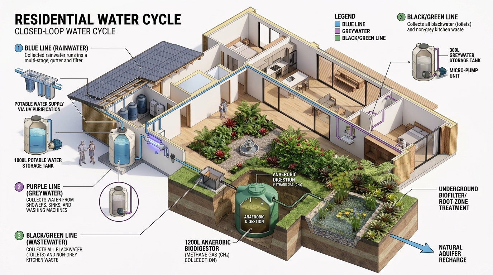
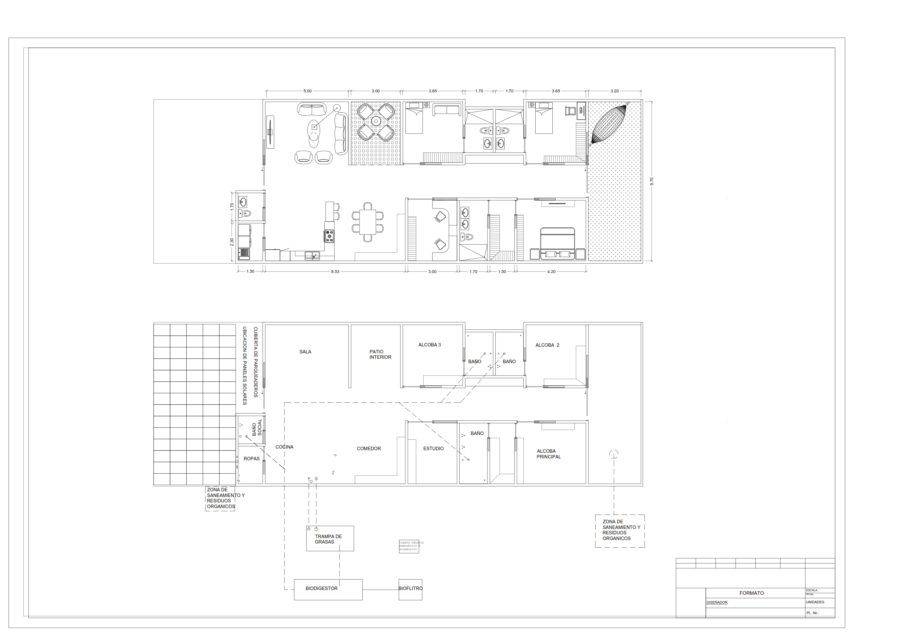
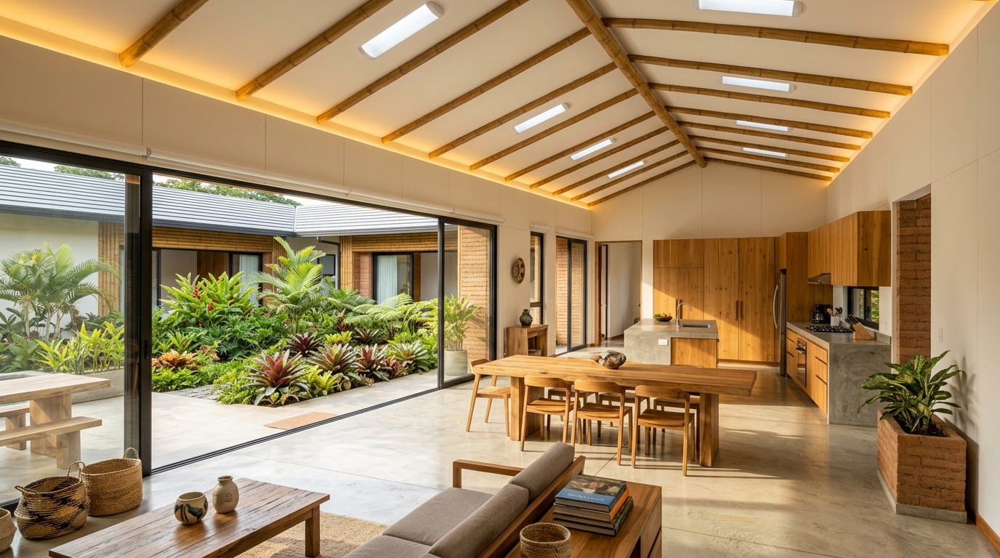
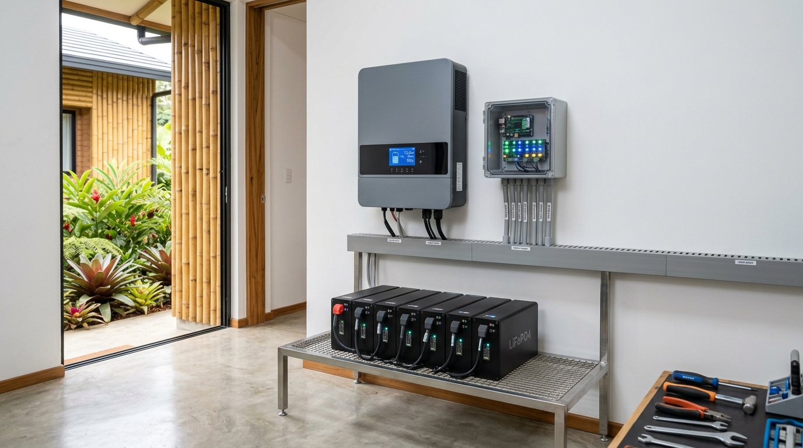
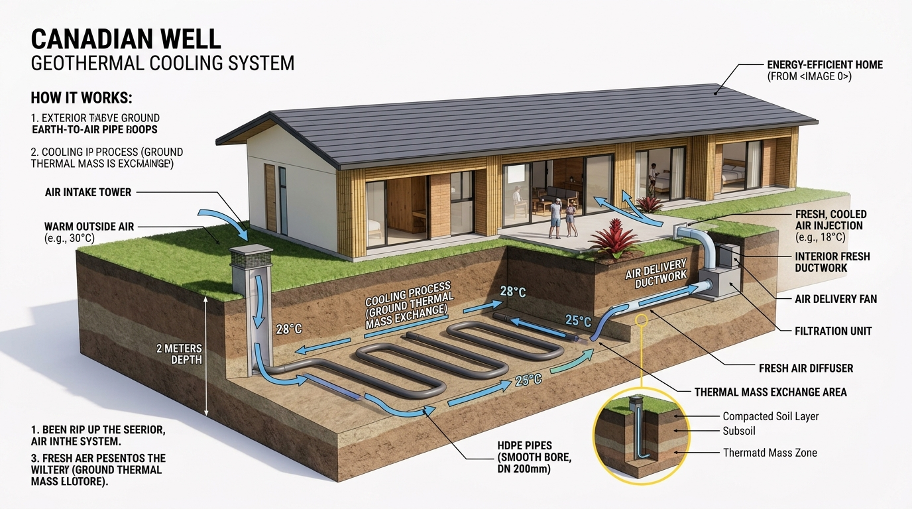
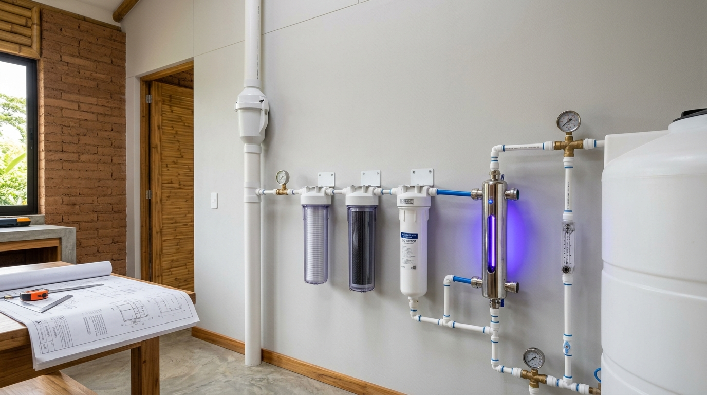
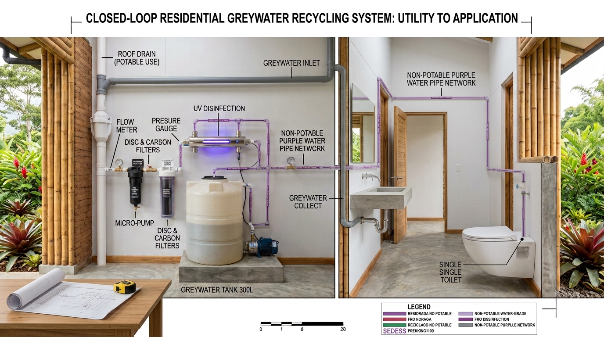
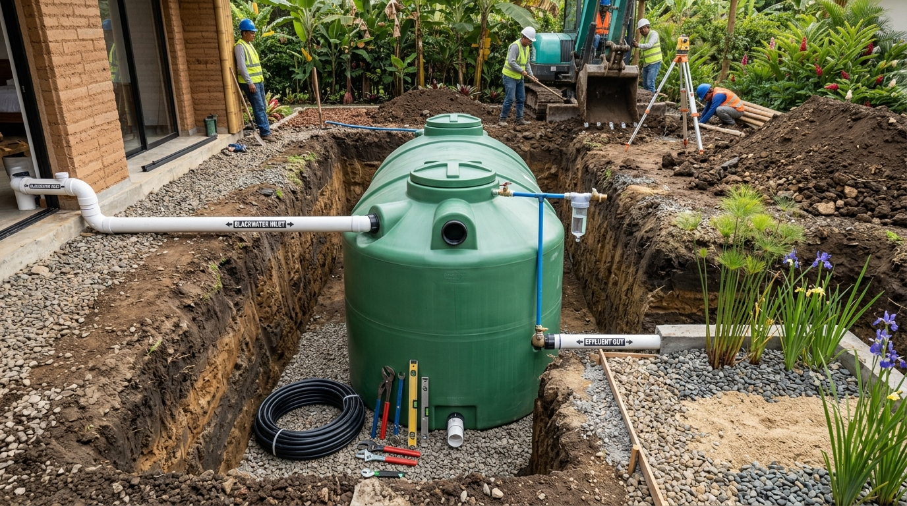
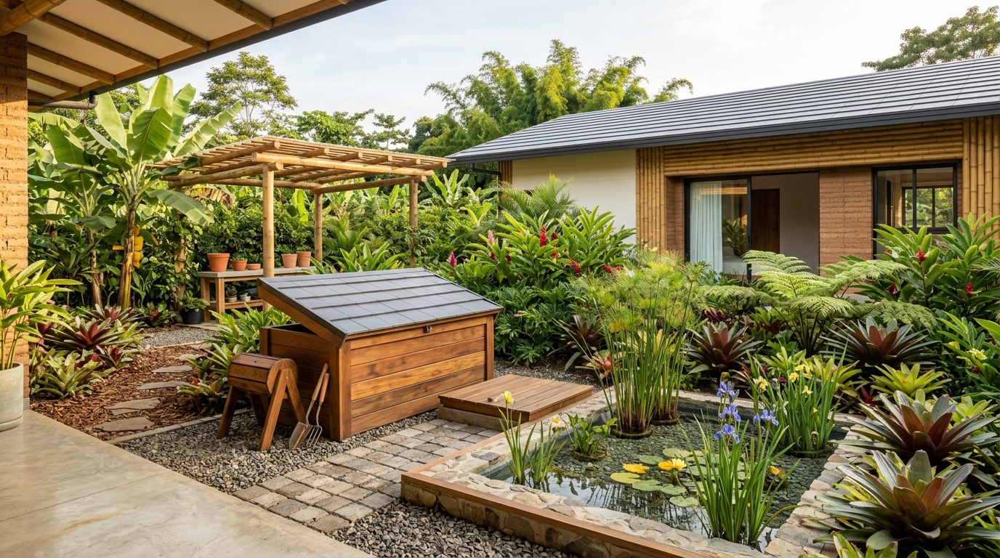

LIVING LAB OFF-GRID
LIVING LAB OFF-GRID
LIVING LAB OFF-GRID
LIVING LAB OFF-GRID
Un laboratorio vivo diseñado para democratizar la autosuficiencia hídrica, energética y de saneamiento en el Sur Global mediante diseño modular e innovación pasiva.

Diseño optimizado de 190 m² estructurado para favorecer la ventilación cruzada y el confort térmico pasivo.
Modulación estructurada con patio interior central, aleros bioclimáticos calculados según el ángulo solar y separación lógica entre zonas secas, hidráulicas y de saneamiento exterior.
Líder del Proyecto: Arq. Ana María Sánchez Casilimas.

Integración fluida entre sala, comedor y cocina con vista al patio interior. Aprovechamiento de luz natural mediante tubos solares (Solatube) y ventanales de doble vidrio hermético (DVH).

Matriz energética 100% independiente con tejas solares impermeables y climatización sin consumo de red.
Las tejas actúan simultáneamente como impermeabilización de la cubierta y generadores de energía con inclinación de 10° a 15°. Cuentan con canaleta integrada para recolección de agua lluvia.

Equipado con un inversor híbrido de 5 kW, banco de baterías de litio (LiFePO4) elevadas a 0.30 m sobre NPT y sensorización de bajo consumo en tiempo real mediante microcontroladores ESP32.

Intercambiador de calor geotérmico subterráneo instalado a -1.80 m de profundidad que inyecta aire fresco a temperatura constante (~18°C) eliminando la necesidad de aire acondicionado.

Potabilización de agua lluvia y tratamiento en línea de aguas grises para reutilización inmediata.
Recorrido del agua lluvia desde la cubierta BIPV mediante canaletas perimetrales con malla desnatadora y filtro First-Flush antes del almacenamiento en tanque de 1,000 Litros.

Tren de purificación compuesto por filtro de sedimentos, carbón activado, membrana de ultrafiltración (0.02 µm) y desinfección por lámpara UV (254 nm) alimentado por micro-bomba.

Corte esquemático mostrando cómo el agua gris usada en el lavamanos es conducida al cuarto técnico para su desinfección y regresa presurizada a la cisterna del sanitario.

Transformación de residuos orgánicos en energía para cocción e insumos agrícolas sin impacto de olores.
Tratamiento anaeróbico de aguas negras que genera biogás purificado mediante tren de desulfurización para suministro de la estufa de cocina.

Módulo tripartito de vermicompostaje con lombriz roja californiana y lecho de infiltración para pulimiento del efluente sin generar contaminación.

Todos los planos arquitectónicos en AutoCAD/BIM, especificaciones técnicas y esquemas de automatización IoT están disponibles bajo licencias libres para su libre replicación en el Sur Global.
Explorar Repositorio en GitHub